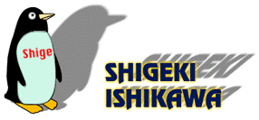
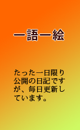
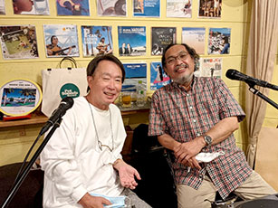

|

Elementary penguin singing Hare Krishna. |
趣味趣味音楽老年探偵団世の中楽しや 僕色男 |
8.5 Aug 2021
【今日はこの曲】「サイモンとガーファンクル 〜 クラウディ」
最近、私の関心事は空に浮かぶ雲の移り変わる様を観察することがメインテーマになってしまいました。いわゆる雲オタクというか雲フェチになってしまい、毎日空に浮かぶ雲が出るとカメラを構えて写真を撮るようになってしまいました。これは以前、岡山を訪ねた際、そこに浮かぶ雲の形に心奪われてしまい、それ以来珍しい形の雲が空に出ると写真をとってチェックするようになってしまったのです。自分でもあきれてしまうのですが、そんな一面が自分にもあったのかと驚いているのが正直な感想です。
先日も地元の武蔵小山の店に入る前に空を見上げたら魅力的な形をした雲が出ていたので思わずカメラを構えてしまったという次第でした。
そんなにわか雲愛好家を馬鹿にせずに優しく静観しておいてください。その内収まりますから。
 